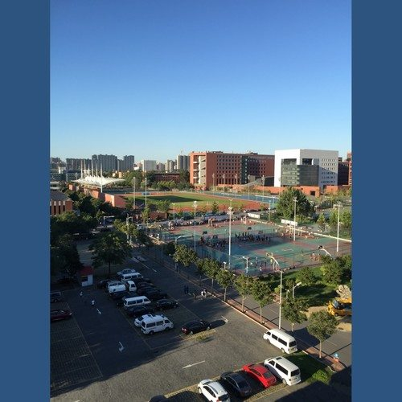

<!DOCTYPE html>
<html lang="zh-CN">
<head>
  <meta charset="UTF-8">
  <title>北工大 - 专辑详情</ti      <ul>
        <li><a href="../../../index.htm" target="_self">首页</a></li>
        <li><a href="../albums.html" class="active">专辑</a></li>
        <li><a href="../../singles/singles.html">单曲</a></li>
        <li><a href="../../live/live.html">现场</a></li>
      </ul>
  <!-- 引入 CSS -->
  <link rel="stylesheet" href="../../../../css/album-detail.css">
  <link rel="stylesheet" href="../../../../css/album-in.css">
  <link rel="stylesheet" href="../../../../css/style.css">
  <link rel="stylesheet" href="../../../../css/carousel.css">
  <link rel="stylesheet" href="../../../../css/player.css">
  <link rel="stylesheet" href="../../../../css/sidebar.css">
  <!-- APlayer 样式 -->
  <link rel="stylesheet" href="https://cdn.jsdelivr.net/npm/aplayer/dist/APlayer.min.css">

  <style>
    /* 整体容器：垂直排列两首歌 */
    .songs-container {
      display: flex;
      flex-direction: column;
      gap: 40px; /* 两首歌之间的间距 */
    }

    /* 每首歌的布局：左边封面+播放器，右边内容 */
    .song-section {
      display: flex;
      gap: 20px;
      align-items: flex-start;
      padding: 20px;
      border: 1px solid #eee;
      border-radius: 10px;
      background: #fafafa;
    }

    .song-cover {
      flex: 1;
      max-width: 300px;
      display: flex;
      flex-direction: column;
      gap: 15px;
    }

    .song-info {
      flex: 2;
    }

    .song-title {
      font-size: 24px;
      font-weight: bold;
      margin-bottom: 20px;
      color: #333;
    }

    /* 标签按钮 */
    .tabs {
      display: flex;
      gap: 10px;
      margin-bottom: 15px;
    }

    .tab {
      padding: 8px 16px;
      background: #eee;
      border: 1px solid #ccc;
      border-radius: 6px;
      cursor: pointer;
      transition: background 0.3s;
    }

    .tab:hover {
      background: #ddd;
    }

    .tab.active {
      background: #4285f4;
      color: white;
      border-color: #4285f4;
    }

    /* 内容区域 */
    .tab-content {
      display: none;
    }

    .tab-content.active {
      display: block;
    }
  </style>
</head>
<body>

  <!-- 侧边栏 -->
  <div id="sidebar" class="sidebar">
    <nav class="sidebar-nav">
      <ul>
        <li><a href="../about/about.html">关于</a></li>
        <li><a href="albums.html" class="active">专辑</a></li>
        <li><a href="../singles/singles.html">单曲</a></li>
        <li><a href="../live/live.html">现场</a></li>
      </ul>
    </nav>
  </div>

  <!-- 页面头部 -->
  <header>
    <h1>北工大</h1>
  </header>

  <!-- 主体内容 -->
  <main>
    <div class="songs-container">
      
      <!-- 第一首歌：平乐园北没有鬼 -->
      <div class="song-section">
        <!-- 左边：专辑封面和播放器 -->
        <div class="song-cover">
          
          
          <!-- 播放器容器 -->
          <div id="aplayer-container-1"></div>
        </div>

        <!-- 右边：歌曲信息 -->
        <div class="song-info">
          <h2 class="song-title">平乐园北没有鬼</h2>
          
          <!-- 标签按钮 -->
          <div class="tabs">
            <div class="tab active" data-target="intro-1">简介</div>
            <div class="tab" data-target="lyrics-1">歌词</div>
          </div>

          <!-- 标签内容：简介 -->
          <div id="intro-1" class="tab-content active">
            <h3>歌曲简介</h3>
            <p>这是关于平乐园北没有鬼的简介，可以写一些背景故事、创作灵感等。</p>
          </div>

          <!-- 标签内容：歌词 -->
          <div id="lyrics-1" class="tab-content">
            <h3>歌词</h3>
            <p>这里可以放平乐园北没有鬼的歌词内容...</p>
          </div>
        </div>
      </div>

      <!-- 第二首歌：站在人文楼梯口看窗外 -->
      <div class="song-section">
        <!-- 左边：专辑封面和播放器 -->
        <div class="song-cover">
          
          
          <!-- 播放器容器 -->
          <div id="aplayer-container-2"></div>
        </div>

        <!-- 右边：歌曲信息 -->
        <div class="song-info">
          <h2 class="song-title">站在人文楼梯口看窗外</h2>
          
          <!-- 标签按钮 -->
          <div class="tabs">
            <div class="tab active" data-target="intro-2">简介</div>
            <div class="tab" data-target="lyrics-2">歌词</div>
          </div>

          <!-- 标签内容：简介 -->
          <div id="intro-2" class="tab-content active">
            <h3>歌曲简介</h3>
            <p>这是关于站在人文楼梯口看窗外的简介，可以写一些背景故事、创作灵感等。</p>
          </div>

          <!-- 标签内容：歌词 -->
          <div id="lyrics-2" class="tab-content">
            <h3>歌词</h3>
            <p>这里可以放站在人文楼梯口看窗外的歌词内容...</p>
          </div>
        </div>
      </div>
      
    </div>
  </main>

  <!-- 页脚 -->
 <footer>
    <p>© 2025 华北浪漫革命</p>
 </footer>

  <!-- APlayer JS -->
  <script src="https://cdn.jsdelivr.net/npm/aplayer/dist/APlayer.min.js"></script>

  <!-- 标签切换脚本 -->
  <script>
    document.addEventListener('DOMContentLoaded', function () {
      // 初始化第一个播放器
      const ap1 = new APlayer({
        container: document.getElementById('aplayer-container-1'),
        fixed: false,
        autoplay: false,
        theme: '#FADFA3',
        loop: 'all',
        audio: [
          {
            name: '平乐园北没有鬼',
            artist: '秋秋叶',
            url: '../../../../../../audio/秋秋叶/秋秋叶 - 平乐园北没有鬼.mp3',
            cover: '../../../../img/cover/北工大.jpg'
          }
        ]
      });

      // 初始化第二个播放器
      const ap2 = new APlayer({
        container: document.getElementById('aplayer-container-2'),
        fixed: false,
        autoplay: false,
        theme: '#FADFA3',
        loop: 'all',
        audio: [
          {
            name: '站在人文楼梯口看窗外',
            artist: '宫爆熊丁',
            url: '../../../../../../audio/秋秋叶/宫爆熊丁 - 站在人文楼梯口看窗外.mp3',
            cover: '../../../../img/cover/北工大.jpg'
          }
        ]
      });

      // 处理标签切换
      const tabs = document.querySelectorAll('.tab');
      
      tabs.forEach(tab => {
        tab.addEventListener('click', () => {
          // 找到同一个歌曲区域内的标签和内容
          const songSection = tab.closest('.song-section');
          const tabsInSection = songSection.querySelectorAll('.tab');
          const contentsInSection = songSection.querySelectorAll('.tab-content');

          // 先移除该区域内所有标签和内容的 active
          tabsInSection.forEach(t => t.classList.remove('active'));
          contentsInSection.forEach(c => c.classList.remove('active'));

          // 给当前点击的标签加 active
          tab.classList.add('active');
          // 找到对应内容块，加 active
          const targetContent = songSection.querySelector(`#${tab.dataset.target}`);
          if (targetContent) {
            targetContent.classList.add('active');
          }
        });
      });
    });
  </script>
</body>
</html>
